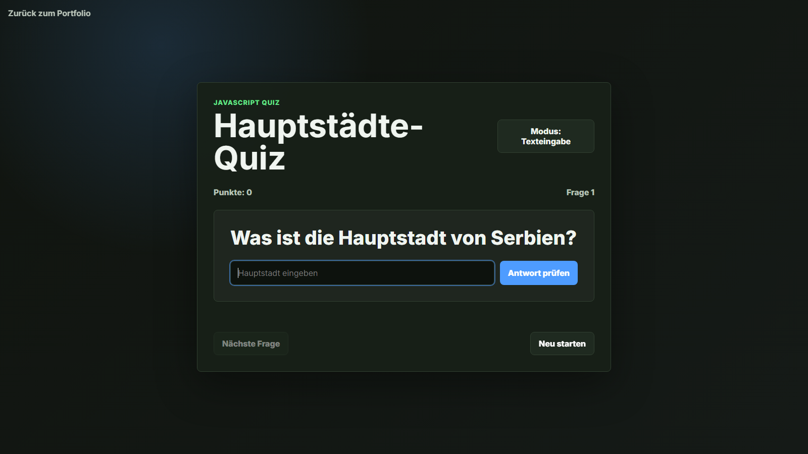

Hauptstädte-Quiz
HTML · CSS · JavaScriptInteraktives Lernquiz mit Texteingabe, Multiple-Choice-Modus, Punkteverwaltung und zufälliger Fragenauswahl.
- Zufällige Fragen aus einer Länderliste
- Direktes Feedback bei richtigen und falschen Antworten
- Umschaltbarer Antwortmodus